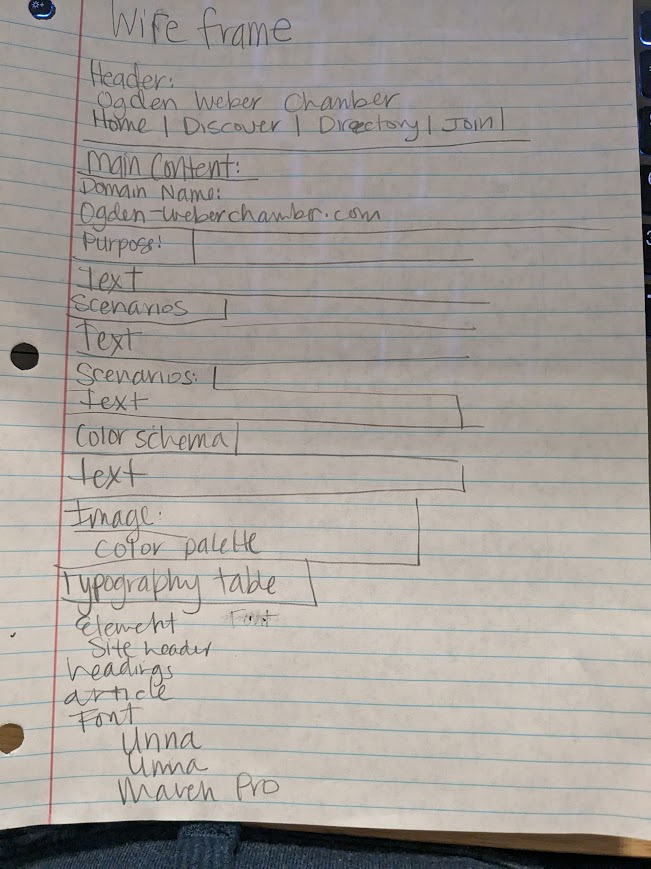

WireFrame

Domain Name:
ogden-weberchamber.com
Scenarios
Ogden-Weber Chamber of Commerce has many benefits for business growth, education and networking. Here are some of the events coming up this next month. February 11 | 8 am - 10 am @ the Ogden Eccles Conference Center Grand Ballroom Economic forecasting with Dr. Lindsey Piegza, PH.D., Chief Economist at Stifel Financial and Michael Jeanfreau, Senior Economist at Utah Department of Workforce Services. February 12 | 12:00 PM - 1:00 PM @ the Chamber Offices Networking and contacts committe. Meet with local businesses once a week to make contacts and exchange referrals in our most popular networking event. February 13 | 8:15 AM - 9:30 AM @ the Chamber Offices Women in Business. Meet and network with women in the community who own and operate succesful businesses. Our board is made of 23 members of our business community. Please call for any questions or information you may have. (801) 621-8300 Monday - Friday 8 AM - 4 PMColor Schema:
I picked this monochromatic color scheme because the colors shouldn't be too busy. You should be able to replicate them in a number of scenerios and purple is a power color.Typography
| Element | Font |
|---|---|
| Site Header | Unna |
| Headings (h1, h2, h3) | Unna |
| Article, Paragraph Text (p) | Maven Pro |